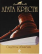

"Почему не Эванс?" - именно эти, давшие роману название предсмертные слова произнес таинственный незнакомец, обнаруженный сыном викария Бобби Джонсом во время игры в гольф. Молодому человеку на пару с юной леди Фрэнсес Деруэнт придется заняться расследованием этого загадочного убийства. В этот том вошел также сборник рассказов "Гончая смерти". Самый знаменитый рассказ сборника - "Свидетель обвинения" - был переделан в пьесу. Одноименный фильм-экранизация этого рассказа/пьесы был снят в 1957 году и считается одним из лучших детективных фильмов в истории кино. Главную роль в фильме исполнила великая Марлен Дитрих.